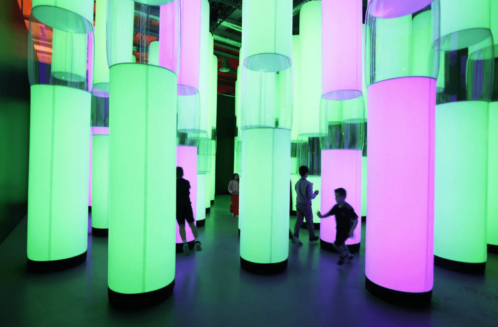
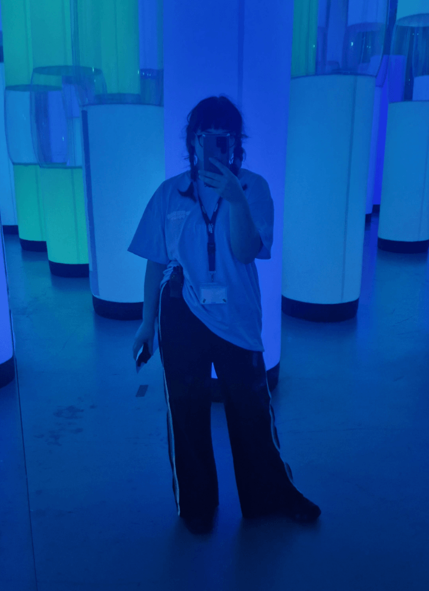
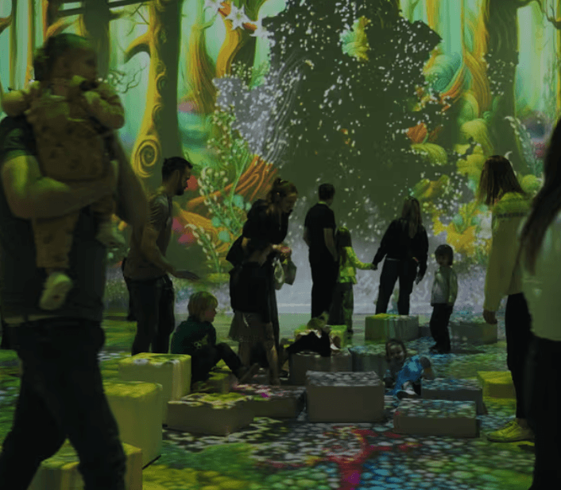
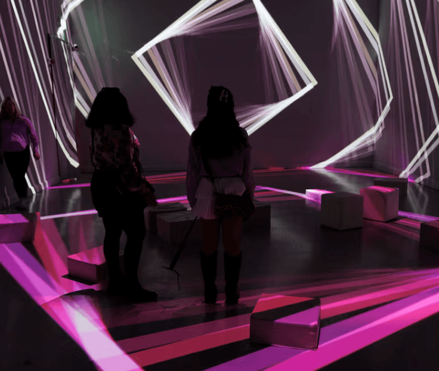
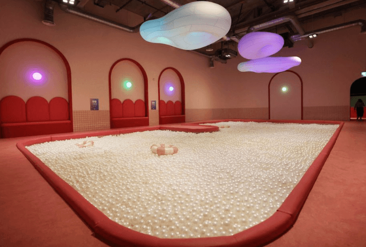
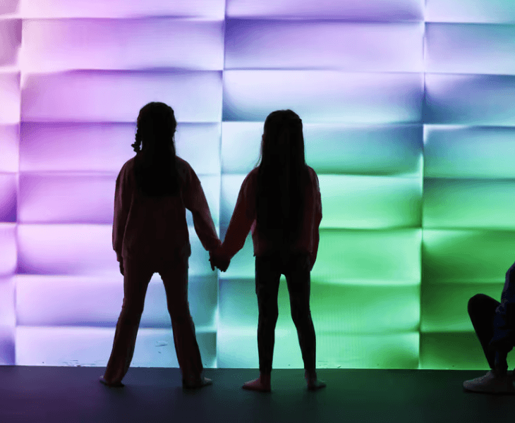

Immersive spaces, festivals, and live experience
A large-scale immersive installation where I sat at the intersection of operations and technical maintenance — the person you call when a QLab cue misfires, when the AV needs troubleshooting, when an installation element drifts out of calibration. I coordinated front-of-house teams, trained supervisors, and acted as the on-site technical liaison. The kind of work where nothing should be visible to the audience, and everything depends on you.






An ongoing street festival celebrating the legacy of Bram Stoker through atmospheric, spooky public events across Dublin. I worked across multiple editions in production and front-of-house roles — coordinating artists and crew, troubleshooting logistics on the ground, welcoming audiences, and supporting event safety on-site. Each year brought new technical challenges and a growing set of responsibilities. The kind of recurring gig where you earn trust by showing up sharper every time.
Supporting Space Lion Studios in delivering an immersive presence at events including Render Belfast, Dublin Comic Con, and Gamer Fest. My role spanned stand design, brand activation, tech setup, and live demos of the game Axyz — plus managing social media interactions in real time to drive engagement and build community. These events demanded agility, attention to detail, and the ability to hold a conversation while troubleshooting a screen.
A yearly family-friendly street event filled with art activities, installations, and creative workshops. I supported logistics, setup, and front-of-house — interacting with participants, helping facilitators, and ensuring a smooth, welcoming flow throughout the day. Hands-on, public-facing, with an emphasis on safety and engagement. The kind of work that reminds you why you do this: people discovering things, kids covered in paint, the whole street alive.
A site-specific light installation in Dublin's Botanic Gardens, in collaboration with artist Jonny Easterby. I assisted his team in installation prep, setup, and operation — working in a natural setting with special consideration for sensory design, light placement, and technical consistency. This project required responsiveness, collaboration with an established artist team, and a deep respect for the environment it occupied. Light among the trees. The kind of work that stays with you.